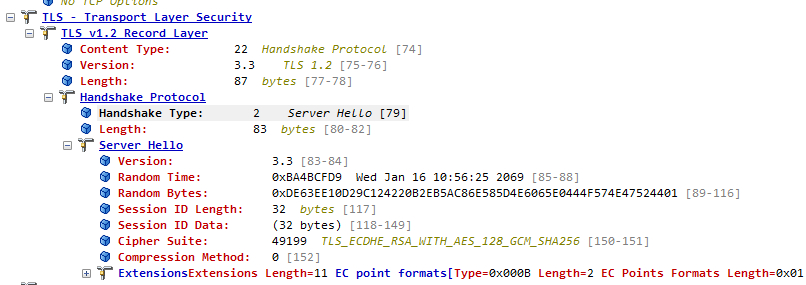

什么是TLS
- 1994: SSL 1.0 NetScape公司提出SSL第一版，未公开。
- 1995: SLL 2.0 公开发布了第二版，与2011年弃用。
- 1996: SSL 3.0 第三版得到大规模应，于2015年弃用。
- 1999: TLS 1.0 RFC2246，被IETF纳入标准化，没太大改动，改名TLS。
- 2006: TLS 1.1 RFC4346，修复bug，增加参数。
- 2008: TLS 1.2 RFC,更多扩展和算法该节。
- 2018: TLS 1.3 减少时延，完全前向安全。
传输层安全性协议（英语：Transport Layer Security，缩写：TLS），前身称为安全套接层（英语：Secure Sockets Layer，缩写：SSL）是一种安全协议，目的是为互联网通信提供安全及数据完整性保障。TLS（Transport Layer Security）是计算机网络通信用于安全加密的协议，HTTP+TLS后后即HTTPS。

TLS介于网络传输层和应用层之间，TLS主要用于数据加密过程，保证数据的安全传输。TLS是一套混合加密系统，使用了对称加密和非对称加密两种方式。非对称加密相对对称加密更安全，但是其复杂的加解密会使得通信效率降低，为了解决这种场景。先使用“非对称加密”的方式传输用于数据的“对称加密密钥”，以保证双方的对称加密秘钥是安全传输的，后续就可以直接使用对称加密秘钥进行传输了。关于非对称加密和对称加密接下来简单说明一下。
对称加密与非对称加密
对称加密
{kind=link}
对称加密双方使用相同的秘钥进行加解密，秘钥被称为共享秘钥和对称秘钥。常见的对称加密算法有AES、DES、3DES等等，下面简要说明一下常用的AES算法。
AES加解密

AES是秘钥长度有128/192/256，其秘钥长度用于指定将明文转换为密文所需要的变化轮数，如当秘钥长度128位是，轮数是10；秘钥长度为192位时，轮数为12；秘钥长度为256时，轮数为14。
由于AES算法单次只能加解密固定长度的分组数据，如AES 单次只能加解密128位数据，而实际场景中的AES加解密长度并不是128位的整数倍，为了解决这个问题，使用AES可以使用分组密码模式配合消息填充的方法来解决。
分组密码模式
ECB模式
{kind=link}
将明文进行分组加密，加密结果为密文分组，最后一个明文分组需要必须要填充为128位。
CBC模式
{kind=link}
依旧是对明文进行分组加密，最后一个分组需要填充满128位。每一组明文在加密前都与前面的密文分组进行异或操作。由于第一个明文分组前没有密文分组，所以需要准备一个与密文分组长度相等的比特序列来代替密文分组，这个比特序列被称作初始化向量，简称IV。
CTR模式

CTR模式使用用于分组长度相同的计数值参与运算，通过对逐次累加的计数器进行加密来生成密钥流，通过加密计数器得到的密钥流与明文分组进行异或运算，得到密文分组。若明文长度不是分组长度的整数倍，假设最后一个明文分组N的 长度为L位，那么最后一个明文分组N只需与计数器N加密结果的左侧 L位异或，获得的密文分组N的长度也是N位。这种算法结构使得CTR 模式不需要对明文进行填充。
分组明文的填充
使用ECB/CBC模式，当加密明文不是分组密码长度的整数倍是，通常需要对明文进行填充，常用的填充方案是PKCS7。
以AES-CBC算法为例，若分组的长度是16字节，当加密明文是28字节是，则需要在明文末尾填充4字节，使其达到分组长度的整数倍；若待加密数据恰好是16字节，需要在明文后面额外填充16字节，并将其全部填充为16。

Mbedtls AES示例
uint8_t key[16] = { 0x06, 0xa9, 0x21, 0x40, 0x36, 0xb8,
0xa1, 0x5b, 0x51, 0x2e, 0x03, 0xd5, 0x34, 0x12, 0x00, 0x06 };
uint8_t iv[16] = { 0x3d, 0xaf, 0xba, 0x42, 0x9d, 0x9e,
0xb4, 0x30, 0xb4, 0x22, 0xda, 0x80, 0x2c, 0x9f, 0xac, 0x41 };
int cipher(int type)
{
size_t len;
int olen = 0;
uint8_t buf[64];
mbedtls_cipher_context_t ctx;
const mbedtls_cipher_info_t *info;
mbedtls_cipher_init(&ctx);
info = mbedtls_cipher_info_from_type(type); //获取加密模式
mbedtls_cipher_setup(&ctx, info); //设置cipher结构体，内部是赋值的过程
mbedtls_cipher_setkey(&ctx, key, sizeof(key)*8, MBEDTLS_ENCRYPT); //设置密钥
mbedtls_cipher_set_iv(&ctx, iv, sizeof(iv)); //设置IV，CBC/CTR都需要IV，第一组的异或
mbedtls_cipher_update(&ctx, ptx, strlen(ptx), buf, &len);//更新cipher
olen += len;
mbedtls_cipher_finish(&ctx, buf + len, &len);//cipher完成
olen += len;
mbedtls_cipher_free(&ctx);
return 0;
}
int main(void)
{
cipher(MBEDTLS_CIPHER_AES_128_CBC);
cipher(MBEDTLS_CIPHER_AES_128_CTR);
return 0;
}
非对称加密
上一小节说了对称加密算法，其特点就是加密速度快，效率高，但是其缺点就是在于密钥的传输存在安全性问题，因为大部分通信都是通过网络来进行传输的，密钥容易在传输过程中被窃取，一旦获得密钥，那么后面的加密就毫无意义了。为了解决这种问题，非对称加密就产生了，非对称加密的特点就是把密钥进行分离，分成公钥和私钥两个部分。公钥是传输的双方公有的密钥，用于数据的加密，而私钥用于解密，双方的私钥不一样，各自保管。通过公钥加密、各自的私钥解密这样即使公钥被泄露，也不用担心，没有私钥是无法解密的。常见的非对称加密算法有RSA，DSA，ECC等。下面重点简要介绍RSA加密算法。
RSA

1） Bob按照RSA算法标准生成密钥对，这个密钥对包含公钥和私钥。 2） Bob将公钥发送给Alice，私钥则自己进行保存起来。 3） Alice收到Bob的公钥后，使用该公钥加密明文，接着发送给Bob。 4） Bob接收到Alice使用公钥加密的密文后，使用自己的私钥进行解密得到明文，解密正确后则后续Bob就使用这套密钥。
mbedtls RSA示例
size_t olen = 0;
uint8_t out[2048/8];
mbedtls_rsa_context ctx;
mbedtls_entropy_context entropy;
mbedtls_ctr_drbg_context ctr_drbg;
const char *pers = "simple_rsa";
const char *msg = "Hello, World!";
mbedtls_platform_set_printf(printf);
mbedtls_platform_set_snprintf(snprintf);
mbedtls_entropy_init(&entropy); //初始化熵结构体
mbedtls_ctr_drbg_init(&ctr_drbg);//初始化随机数结构体
mbedtls_rsa_init(&ctx, MBEDTLS_RSA_PKCS_V21, MBEDTLS_MD_SHA256); //初始化RSA结构体
mbedtls_entropy_add_source(&entropy, entropy_source, NULL, MBEDTLS_ENTROPY_MAX_GATHER, MBEDTLS_ENTROPY_SOURCE_STRONG); //添加熵源接口，设置熵源属性
mbedtls_ctr_drbg_seed(&ctr_drbg, mbedtls_entropy_func, &entropy, (const uint8_t *) pers, strlen(pers)); //根据个性化字符串更新种子
mbedtls_rsa_gen_key(&ctx, mbedtls_ctr_drbg_random, &ctr_drbg, 2048, 65537);//RSA生成密钥对
mbedtls_rsa_pkcs1_encrypt(&ctx, mbedtls_ctr_drbg_random, &ctr_drbg, MBEDTLS_RSA_PUBLIC, strlen(msg), msg, out);//RSA加密操作，通过指定公钥进行加密
mbedtls_rsa_pkcs1_decrypt(&ctx, mbedtls_ctr_drbg_random, &ctr_drbg, MBEDTLS_RSA_PRIVATE, &olen, out, out, sizeof(out));//RSA解密操作，通过制定参数私钥解密
out[olen] = 0;
memcmp(out, msg, olen);
mbedtls_ctr_drbg_free(&ctr_drbg);
mbedtls_entropy_free(&entropy);
mbedtls_rsa_free(&ctx);
return 0;
数字证书
使用非对称加密的好处就是，通过公钥加密、私钥解密，私钥是各自私有这样相比于对称加密就更安全了。一般情况下，公钥需要通过网络进行传输，而且公钥都是公开的。假设有这么一个场景，A和B在首次建立通信连接的时候，A发送给B公钥，但是在发送公钥的过程中被C劫持了，换成了C自己的公钥发送给B，那么B就误认为C的公钥是A发送的，那么后续C就可以作为中间人获取到通信内容，传输链路A->C-B。 
为了解决这种在初次建立连接是被中间人中继的问题，因为非对称加密公私钥可以分离，所以可以找个大家信得过的机构来专门颁发公钥，这个机构颁发的就是数字证书，相当于就是身份证。让A和B的公钥是值得信赖的，不要让B误认为公钥是C的公钥。
签发证书的机构被称为 CA（ Certificate Authority），理论上每个人都可以成为CA，因为每个人都可以自己签发证书，但是只有极少数的权威CA颁发的证书才会被承认。
一般来说数字证书可以按照安全程度分为以下三类：
EV：EV证书(Extended Validation Certificate)是一种根据一系列特定标准颁发的X.509电子证书，根据要求，在颁发证书之前，证书颁发机构(CA)必须验证申请者的身份。不同机构根据证书标准发行的扩展验证证书并无太大差异，但是有时候根据一些具体的要求，特定机构发行的证书可以被特定的软件识别 OV：OV证书(Organization Validation SSL)，指需要验证网站所有单位的真实身份的标准型SSL证书，此类证书不仅能够起到网站信息加密的作用，而且能向用户证明网站的真实身份 DV：DV证书(Domain Validation SSL)，指需要验证域名的有效性。该类证书只提供基本的加密保障，不能提供域名所有者的信息
TLS协议
{kind=link}
TLS协议可以分为记录层和握手层
- 记录层：负责对数据进行加密、压缩、分段，并保证数据的完整性和安全传输。
- 握手层：负责建立安全通信，完成密钥交换、身份认证以及协商加密算法等，确保双方通信的安全性。
握手层有3个协议，握手协议（Handshake Protocol）、更换加密规约协议（Change Cipher Spec Protocol）、告警协议（Alert Protocol）。
TLSv1.2 握手过程

步骤1：客户端通过明文的方式发送Client Hello 消息到服务器，消息中主要包含了客户端支持的ciphersuites， TLS 版本信息和客户端随机数。 
步骤2：服务器接收到消息后，明文发送一个Server Hello给客户端，包括自己支持的ciphersuites， TLS 版本，自己的数字证书（证书中包含了公钥）和服务器端生成的随机数。在包的交互上，证书、随机数等可能是不包含在Server Hello一个包中单独进行发送，示服务器具体的行为。下图是Server Hello， 
{kind=link}
当客户端需要对服务器的身份进行验证时，服务器端发送 Certificate消息。该消息中包含证书清单，证书清单是一组X.509 v3证书列表。证书列表包含服务器证书、中间证书和根证书。通常情况下服务器并不会发送根证书，这就需要客户端提前导入根证书。通过Certificate消息，客户端将获得服务器的公钥，并通过根证书中的公钥验证服务器公钥的合法 性。下图是服务器证书Ceriticate，证书中包含了公钥。

如果服务器没有证书或者服务器的证书仅用来签名（如DSS证书、签名RSA证书），或者使用的是FORTEZZA KEA密钥交换算法，那么就需要发送Server Key Exchange。服务器会在 server Certificate 消息之后发送 Server Key Exchange 消息。

服务器Hello阶段结束后，一般会附上一条简单的Server Hello Done表示结束。 
步骤3：客户端开始验证数字证书，可能会不断往上追溯 CA，直到一个可信任CA。验证证书合法之后，从证书中读取公钥信息。之后生成一个pre-master key（用来生成后续的对称秘钥），接着使用证书中的公钥来对pre-master key进行加密，然后发送给服务器。该过程是非对称加密传输。服务器接收到客户端发送过来的非对称加密的密文，使用自己的私钥进行解密，获得了pre-master key。注意此时是非对称加密传输，这样服务器就获得了后续对称加密的密钥。

经过1）2）3）不走，服务器和客户端有了3组数据，分别是客户端的随机数、服务器的随机数和pre-master key。其中由于客户端的随机数和服务器的随机数都是使用明文传输，所以这两个数字是有被暴露的风险的，但是由于pre-master key是使用非对称加密传输，十分安全，所以将这三者结合，使用之前协商好的特定的算法就可以生成一个密钥，这个密钥称为shared secert。也就是之后用来对称加密的密钥。
步骤4：客户端在计算出对称加密的密钥之后，使用该密钥进行对称加密通信，告知服务器之后都使用该密钥进行对称加密。注意此时是对称加密传输服务器接收到密文后，使用之前计算出的密钥来进行对称解密，解密成功之后，再使用该密钥进行对称加密通信。告知客户端密钥确认无误，可以使用该密钥进行通信。
{kind=link}
至此，整个TLS的握手过程完整，之后就可以开始对称加密的通信了。总结一下SSL/TLS协议的基本过程，前两步又称为\\\\\\\\\\\\\\\\\\\\\\\\\\\\\\\\\\\\\\\\\\\\\\\\\\\\\\\\\\\\\\\\\\\\\\\\\\\\\\\\\\\\\\\\\\\\\\\\\\\\\\\\\\\\\\\\\\\\\\\\\\\\\\\\"握手阶段\\\\\\\\\\\\\\\\\\\\\\\\\\\\\\\\\\\\\\\\\\\\\\\\\\\\\\\\\\\\\\\\\\\\\\\\\\\\\\\\\\\\\\\\\\\\\\\\\\\\\\\\\\\\\\\\\\\\\\\\\\\\\\\\"（handshake）,是SSL/TLS加密通信的基础。
-
通过CA体系交换公钥
-
使用非对称加密算法，交换用于对称加密的密钥
-
有效数据使用对称加密算法，进行密文传输
TLSv1.3握手过程
待补充。
TLS应用编程
创建连接
int ssl_transport_connect(NetworkContext_t* net_ctx,
const char* host,
uint16_t port,
const char* cacert) {
const char* pers = "ssl_client";
int ret;
Address resolved_addr;
mbedtls_ssl_init(&net_ctx->ssl); //初始化ssl结构体
mbedtls_ssl_config_init(&net_ctx->conf);//初始化ssl配置结构体
// mbedtls_x509_crt_init(&net_ctx->cacert);//初始化X.509证书结构体
mbedtls_ctr_drbg_init(&net_ctx->ctr_drbg);//初始化随机数结构体
mbedtls_entropy_init(&net_ctx->entropy);//初始化熵结构体
//初始化个性化字符串更新种子
if ((ret = mbedtls_ctr_drbg_seed(&net_ctx->ctr_drbg, mbedtls_entropy_func, &net_ctx->entropy,
(const unsigned char*)pers, strlen(pers))) != 0) {
return -1;
}
//加载ssl默认配置选项，可以指定端类型、传输协议等参数。
if ((ret = mbedtls_ssl_config_defaults(&net_ctx->conf,
MBEDTLS_SSL_IS_CLIENT,
MBEDTLS_SSL_TRANSPORT_STREAM,
MBEDTLS_SSL_PRESET_DEFAULT)) != 0) {
LOGE("ssl config error: -0x%x", (unsigned int)-ret);
return -1;
}
//配置认真方式，配置项包括
// VERIFY_NONE：不对证书进行验证。
// VERIFY_OPTIONAL：对证书进行验证，即使证书验证失败，继续完成握手操作
// VERIFY_REQUIRED: 对证书进行验证，而且要求证书必须通过验证，否则总之握手过程
mbedtls_ssl_conf_authmode(&net_ctx->conf, MBEDTLS_SSL_VERIFY_OPTIONAL);
/*
XXX: not sure if this is needed
ret = mbedtls_x509_crt_parse(&net_ctx->cacert, (const unsigned char *) cacert, strlen(cacert) + 1);
if (ret < 0) {
LOGE("ssl parse error: -0x%x", (unsigned int) -ret);
}
mbedtls_ssl_conf_ca_chain(&net_ctx->conf, &net_ctx->cacert, NULL);
*/
//设置随机数生成器回调接口
mbedtls_ssl_conf_rng(&net_ctx->conf, mbedtls_ctr_drbg_random, &net_ctx->ctr_drbg);
//通过配置选项完成ssl的设置
if ((ret = mbedtls_ssl_setup(&net_ctx->ssl, &net_ctx->conf)) != 0) {
LOGE("ssl setup error: -0x%x", (unsigned int)-ret);
return -1;
}
//配置ssl hostname
if ((ret = mbedtls_ssl_set_hostname(&net_ctx->ssl, host)) != 0) {
LOGE("ssl set hostname error: -0x%x", (unsigned int)-ret);
return -1;
}
//创建socket，配置地址和端口，发起tcp连接
memset(&resolved_addr, 0, sizeof(resolved_addr));
tcp_socket_open(&net_ctx->tcp_socket, AF_INET);
ports_resolve_addr(host, &resolved_addr);
addr_set_port(&resolved_addr, port);
if ((ret = tcp_socket_connect(&net_ctx->tcp_socket, &resolved_addr) < 0)) {
return -1;
}
//配置 SSL 连接的接收超时时间
mbedtls_ssl_conf_read_timeout(&net_ctx->conf, SSL_RECV_TIMEOUT);
//设置 SSL 连接的 BIO（输入输出）接口，即定义 SSL/TLS 连接使用的网络 I/O 操作函数。
//&net_ctx->ssl：这是指向 mbedtls_ssl_context 结构体的指针，表示 SSL/TLS 会话上下文。
//&net_ctx->tcp_socket：这是指向 TCP 套接字的指针，表示底层的网络连接（通常是一个 TCP 套接字，用于在网络中传输加密数据）。
//ssl_transport_mbedtls_send：这是一个自定义的发送数据函数，用于通过网络连接发送加密后的数据。mbedtls_ssl_write 函数最终会调用这个发送函数，将数据从应用层发送到网络层。
//ssl_transport_mbedtls_recv_timeout：这是一个自定义的接收数据函数，用于在设置的超时限制下从网络接收数据。它会被 mbedtls_ssl_read 调用，接收经过加密的 SSL/TLS 数据并解密。
mbedtls_ssl_set_bio(&net_ctx->ssl, &net_ctx->tcp_socket,
ssl_transport_mbedlts_send, NULL, ssl_transport_mbedtls_recv_timeout);
LOGI("start to handshake");
//执行handshake握手
while ((ret = mbedtls_ssl_handshake(&net_ctx->ssl)) != 0) {
if (ret != MBEDTLS_ERR_SSL_WANT_READ && ret != MBEDTLS_ERR_SSL_WANT_WRITE) {
LOGE("ssl handshake error: -0x%x", (unsigned int)-ret);
}
}
LOGI("handshake success");
return 0;
}
mbedtls_ssl_set_bio传入的函数。
static int ssl_transport_mbedtls_recv_timeout(void* ctx, unsigned char* buf, size_t len, uint32_t timeout) {
int ret;
fd_set read_fds;
struct timeval tv;
tv.tv_sec = timeout / 1000;
tv.tv_usec = (timeout % 1000) * 1000;
FD_ZERO(&read_fds);
FD_SET(((TcpSocket*)ctx)->fd, &read_fds);
ret = select(((TcpSocket*)ctx)->fd + 1, &read_fds, NULL, NULL, &tv);
if (ret < 0) {
return -1;
} else if (ret == 0) {
// timeout
} else {
if (FD_ISSET(((TcpSocket*)ctx)->fd, &read_fds)) {
ret = tcp_socket_recv((TcpSocket*)ctx, buf, len);
}
}
return ret;
}
static int ssl_transport_mbedlts_send(void* ctx, const uint8_t* buf, size_t len) {
return tcp_socket_send((TcpSocket*)ctx, buf, len);
}
收发数据
int32_t ssl_transport_recv(NetworkContext_t* net_ctx, void* buf, size_t len) {
int ret;
memset(buf, 0, len);
ret = mbedtls_ssl_read(&net_ctx->ssl, buf, len);
return ret;
}
int32_t ssl_transport_send(NetworkContext_t* net_ctx, const void* buf, size_t len) {
int ret;
while ((ret = mbedtls_ssl_write(&net_ctx->ssl, buf, len)) <= 0) {
if (ret != MBEDTLS_ERR_SSL_WANT_READ && ret != MBEDTLS_ERR_SSL_WANT_WRITE) {
LOGE("ssl write error: -0x%x", (unsigned int)-ret);
}
}
return ret;
}
断开连接
void ssl_transport_disconnect(NetworkContext_t* net_ctx) {
mbedtls_ssl_config_free(&net_ctx->conf);
// mbedtls_x509_crt_free(&net_ctx->cacert);
mbedtls_ctr_drbg_free(&net_ctx->ctr_drbg);
mbedtls_entropy_free(&net_ctx->entropy);
mbedtls_ssl_free(&net_ctx->ssl);
tcp_socket_close(&net_ctx->tcp_socket);
}
参考： 1. 《密码技术与物联网安全》 2. https://tinychen.com/20200602-encryption-intro/